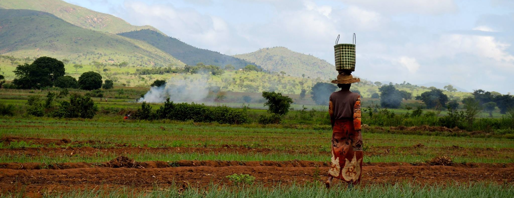
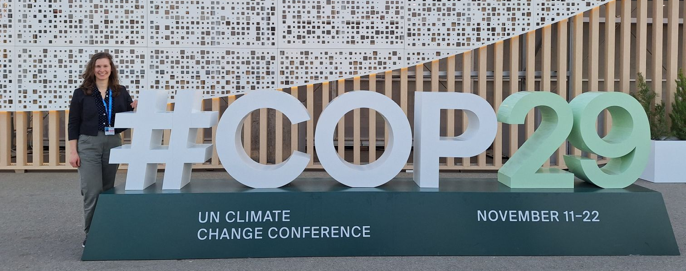

Education, Research, and Industry Experience
My academic background is in geophysics, applied mathematics, and data science, with studies in Canada, Austria, and Germany. I hold a PhD in Geophysics from the Department of Earth, Ocean and Atmospheric Sciences at the University of British Columbia and currently conduct research at
the School of Regional and Community Planning (SCARP) and the Harvard T.H. Chan School of Public Health.
Before and during my PhD, I gained interdisciplinary research experience across several roles, including as a research assistant at the Urban Predictive Analytics Lab at the University of British Columbia, through the Portfolio Management Program at the Research Institute for Capital Markets in Austria, and as a research assistant at the Institute for Supply Chain Management at the University of St. Gallen.
In addition, I have held a range of industry positions in data science and machine learning consulting, asset management, and private banking across England, Switzerland, Latvia, Norway, and Austria, and I have also worked in sustainable development, resilience, and food security with the German Development Cooperation (GIZ) in Madagascar.
Here is a summary of my academic positions and degrees:
- Postdoc (08/2025–present), SCARP, University of British Columbia, Canada
- Visiting Scientist (09/2025–02/2026), Harvard T.H. Chan School of Public Health, United States
- PhD in Geophysics (07/2025), EOAS, University of British Columbia, Canada
- MSc in Quantitative Finance (2017), Vienna University of Economics and Business, Austria
- BSc in Mathematics (2011), University of Regensburg, Germany

Outreach and Policy Engagement
I am actively involved in outreach, science communication, and policy engagement, with a focus on translating climate change research, including my own, into actionable insights. I have presented my work at high-level international conferences attended by policymakers, including as an Early Career Scientist (ECS) volunteer for the International Cryosphere Climate Initiative (ICCI) at COP29 in Azerbaijan and at the High-Level Conference on Glacier Preservation in Tajikistan. I have also co-organized the Graduate Climate Conference twice, an interdisciplinary three-day event that brought together 120 international graduate students in climate science.
Beyond this, I have explored creative approaches to science communication by collaborating with composers to create music inspired by my research on glacier melt, which was performed in public concerts in Vancouver. In addition, I co-created a 15-minute documentary on gender inequality in Madagascar, for which I wrote large parts of the script in French, directed several sections, and oversaw the editing process.